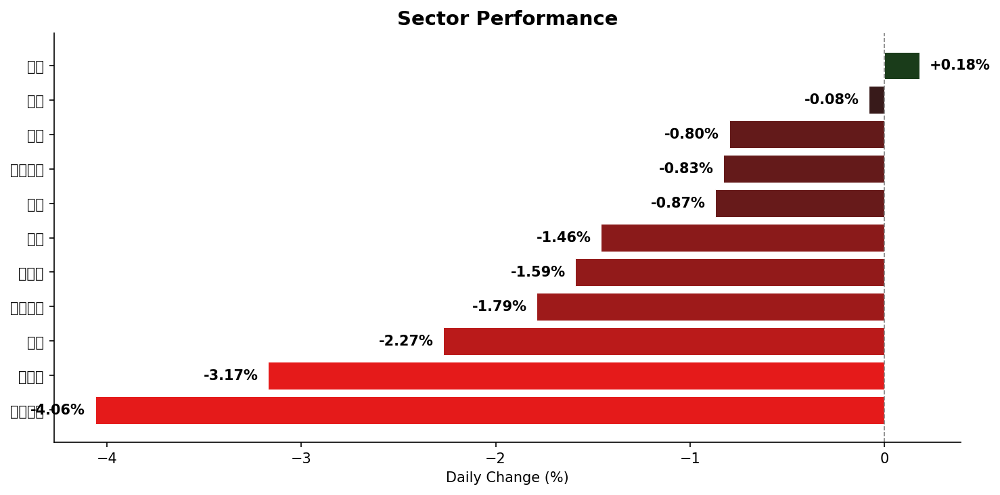

盤前市場簡報 — 2026年3月23日（週一）
報告類型：盤前日報（Pre-market Briefing）
數據截至：2026-03-20 收盤 + 週末消息面
生成時間：2026-03-23 03:30 ET
模式：公開版（無持倉數據）
一、市場總覽
1.1 美國主要指數
| 指數 |
收盤價 |
漲跌 |
漲跌幅 |
成交量 |
| S&P 500 |
6,506.48 |
-100.01 |
-1.51% |
7.04B |
| NASDAQ |
21,647.61 |
-443.08 |
-2.01% |
10.44B |
| Dow Jones |
45,577.47 |
-443.96 |
-0.96% |
1.07B |
| Russell 2000 |
2,438.45 |
-56.26 |
-2.26% |
— |
1.2 亞洲主要指數
| 指數 |
收盤價 |
漲跌 |
漲跌幅 |
| 恆生指數 |
24,268.45 |
-1,008.87 |
-3.99% |
| 上證綜指 |
3,813.28 |
-143.77 |
-3.63% |
| 日經 225 |
51,515.49 |
-1,857.04 |
-3.48% |
1.3 大宗商品與外匯
| 品種 |
收盤價 |
漲跌幅 |
備註 |
| WTI 原油 |
$101.06 |
+2.79% |
突破 $100 關口 |
| Brent 原油 |
$108.94 |
-2.90% |
週五回落 |
| 黃金 |
$4,121.50 |
-9.82% |
2011年以來最大單週跌幅 |
| 白銀 |
$61.77 |
-10.94% |
連續第三週下跌 |
| 天然氣 |
$3.12 |
+0.90% |
— |
| 銅 |
$5.26 |
-1.53% |
— |
| 外匯 |
報價 |
漲跌幅 |
| USD/CNY |
6.91 |
+0.11% |
| EUR/USD |
1.15 |
-0.41% |
| USD/JPY |
159.50 |
+1.00% |
一句話總結：美伊衝突進入第四週，上週五全球股市普遍重挫、S&P 500 連續第四週收跌；聯準會鷹派暫停（3/18 僅保留全年一次降息）疊加中東能源供應實質性中斷（霍爾木茲海峽油輪通行量驟降 70%、波灣產量削減逾 10 mb/d），導致風險資產全面承壓。貴金屬遭遇歷史級拋售，黃金創 2011 年以來最大單週跌幅。週六晚間 Trump 對伊朗發出 48 小時最後通牒（重開海峽否則轟炸電廠），但隨後雙方展開「建設性對話」，Trump 宣布暫停打擊伊朗能源設施——此為週一盤前之最大催化劑。
主要驅動因素：
1. 美伊衝突第四週 + 48 小時最後通牒：「Operation Epic Fury」持續進行；週六晚 Trump 發出最後通牒要求伊朗 48 小時內重開霍爾木茲海峽，到期時間約為週一 19:44 ET。伊拉克宣布所有外資油田不可抗力，科威特煉油廠遭無人機攻擊，沙特攔截射向利雅德之導彈。IEA 已釋放 4 億桶戰略儲備。
2. Trump-伊朗和談轉折（3/23 週末）：最後通牒後雙方傳出「建設性對話」，Trump 宣布暫停對伊朗能源設施之打擊，油價急跌 ~\(7.50（WTI → ~\)90.75），為週一反彈提供重大催化劑
3. 聯準會鷹派暫停（3/18）：維持聯邦基金利率於 3.50%–3.75%，點陣圖將 2026 年降息預期從兩次削減至一次，PCE 通膨預測上調至 2.7%。交易員定價年內無降息，甚至有 10.3% 概率加息
4. 貴金屬閃崩：鷹派 Fed + 油價推升通膨 → 「更高更久」利率敘事 → 黃金週跌 9.6%（2011 年以來最差）、白銀週跌逾 14%
5. 能源危機傳導至消費端：美國汽油均價三週內飆升 32% 至 $3.94/加侖，財長 Bessent 宣布暫時解除部分伊朗石油制裁以增加 ~1.4 億桶供應
二、重要新聞
🔴 高影響
- Trump 48 小時最後通牒 → 和談轉折 — 週六晚 Trump 要求伊朗 48 小時內重開霍爾木茲海峽否則轟炸電廠（到期：週一 ~19:44 ET）；伊朗威脅永久關閉海峽。然而隨後雙方展開「建設性對話」，Trump 宣布暫停打擊伊朗能源設施。油價急跌 ~$7.50，週一期貨或大幅反彈。此為本週最大事件風險——48 小時倒計時仍在進行。 — Axios, 24/7 Wall St.
- 聯準會鷹派暫停（3/18）：全年僅保留一次降息 — 利率維持 3.50%–3.75%；點陣圖從兩次降息削減至一次；PCE 通膨預測上調至 2.7%。Powell 強調須見商品通膨（受關稅與油價雙重推升）回落方可降息。市場定價年內無降息，10.3% 概率加息。 — CNBC, Bloomberg
- 貴金屬歷史級拋售 — 黃金週跌 9.6%（2011 年以來最大）、白銀週跌逾 14%（連三週）。鷹派 Fed + 油價推升通膨 → 「更高更久」利率壓制無息資產。五角大廈向中東增派三艘軍艦之「矛盾性利空」進一步強化此敘事。 — CNBC
- SMCI 聯合創辦人因走私 $25 億 Nvidia AI 晶片至中國被捕 — Yih-Shyan "Wally" Liaw 等三人被控透過後門渠道將 Nvidia GPU 伺服器轉運中國，違反出口管制。SMCI 股價四個交易日暴跌 33%，蒸發 $65 億市值。半導體出口合規審查或擴大至整個產業鏈。 — CNBC
🟡 中影響
- 全球原油供應遭受 1970 年代以來最大中斷 — 霍爾木茲海峽油輪通行量驟降 70%，波灣產量削減逾 10 mb/d。伊拉克宣布外資油田不可抗力，科威特煉油廠遇襲。Brent 收 $112.19，WTI 破 $100。IEA 已釋放 4 億桶戰略儲備。財長 Bessent 暫時解除部分伊朗石油制裁增加 ~1.4 億桶供應。
- 美國汽油價格三週暴漲 32% — 全國均價升至 $3.94/加侖（三週前 $2.98），能源成本正迅速傳導至消費端，為 Fed 通膨管理增添壓力。 — NBC News
- Russell 2000 率先進入修正區間 — 小型股從近期高點跌超 10%，為首個進入技術性修正之美國主要指數。S&P 500 僅 25% 成分股位於 50 日均線上方——極度超賣。
- SCOTUS IEEPA 裁決之餘波 — 2/20 最高法院裁定總統無權依據 IEEPA 徵收關稅；Trump 轉向 Section 122（15% 全球關稅），但有 150 天到期期限（至 7 月中）。中國有效關稅率已達 30-34%，USTR 瞄準 35-50% 區間。
- CERAWeek 2026 能源大會週一開幕（Houston，3/23-27）— 「史上最大世界石油中斷」為主題。能源部長 Wright、內政部長 Burgum 出席，10,000+ 與會者。全週可能持續產生能源板塊催化事件。
⚪ 值得關注
- SolarEdge (SEDG) 逆勢暴漲 +13.21% — 市場大跌中之罕見亮點，或與太陽能政策預期相關
- Polymarket 定價 S&P 500 月底收於 $6,500 以上概率僅 50.5% — 近乎「擲硬幣」，反映市場信心之嚴重分裂
- 非美市場相對跑贏 — 國際股票 ETF 在美國地緣與通膨逆風下成為資金分散化標的
- 中國經濟數據喜憂參半 — 2026 年 GDP 目標下調至 4.5-5%（歷史最低）；房地產仍跌 11.1%；但創紀錄貿易順差加劇中美摩擦
三、技術信號
| 標的 |
RSI(14) |
MACD |
價格 vs SMA20 |
信號 |
| SPY |
30.4 |
-7.36 (< Signal -4.98) |
低於 SMA20 (673.92) |
⚠️ 近超賣 |
| QQQ |
35.2 |
-5.16 (< Signal -3.55) |
低於 SMA20 (602.97) |
📉 偏空 |
| DIA |
25.9 |
-7.83 (< Signal -5.68) |
低於 SMA20 (477.12) |
🔴 超賣 |
| TSLA |
31.9 |
-9.28 (< Signal -7.45) |
低於 SMA20 (398.47) |
📉 偏空 |
| BYD (1211.HK) |
56.0 |
+1.71 (> Signal +1.09) |
高於 SMA20 (98.69) |
📈 偏多 |
| NIO |
52.6 |
+0.24 (> Signal +0.19) |
高於 SMA20 (5.30) |
📈 偏多 |
| ALB |
41.9 |
-2.33 |
低於 SMA20 (169.80) |
📉 偏空 |
| SQM |
43.5 |
-0.02 |
低於 SMA20 (74.74) |
📉 偏空 |
| LIT |
37.0 |
-0.82 |
低於 SMA20 (71.94) |
📉 偏空 |
| NEE |
44.0 |
+0.53 (< Signal +0.99) |
低於 SMA20 (92.30) |
📉 偏空 |
技術面摘要：
- DIA（道瓊 ETF）RSI 跌至 25.9，進入超賣區間（< 30），歷史上此水平常伴隨短期技術性反彈
- SPY RSI 30.4 徘徊於超賣邊緣，若週一因 Trump 伊朗和談消息反彈，或確認短期底部
- 所有美股 ETF 均處於 SMA20 與 SMA50 之下，中期趨勢仍為空頭格局
- 中概股（BYD、NIO）技術面相對健康，RSI 處於中性偏多區間，MACD 維持多頭排列
四、預測市場（Polymarket）
| 事件 |
概率 |
市場影響 |
| S&P 500 月底收於 $6,500 以上 |
50.5% |
市場對短期走勢之分歧極大，近乎「擲硬幣」 |
| WTI 原油三月觸及 $100 |
88.0% |
已實現（WTI 收於 $101.06） |
| 三月 CPI 年率 ≤ 2.0% |
0.4% |
市場幾乎不認為通膨會回落至 2% 以下 |
| Bitcoin 3/23 觸及 $75,000 |
0.9% |
加密市場信心低迷 |
| OpenAI 七月前獲聯邦基建擔保 |
5.5% |
AI 政策支持預期偏低 |
五、今日與本週預覽
經濟日曆
⚠️ 受 2025 年 10-11 月政府關門影響，本週多項重要數據（新屋銷售、耐久財訂單、GDP 第三次估計）已延後發布。
| 日期 |
時間 (ET) |
事件 |
重要性 |
| 3/23 (一) |
08:30 |
Chicago Fed 全國活動指數 (CFNAI)（2月，前值 +0.18） |
中 |
| 3/24 (二) |
08:30 |
非農生產力指數（4Q 終值） |
中 |
| 3/24 (二) |
09:45 |
S&P Global Flash PMIs（3月） — 已公布：製造業 49.8（收縮）、綜合 53.5 |
高 |
| 3/24 (二) |
10:00 |
Richmond Fed 製造業指數（3月） |
中 |
| 3/25 (三) |
08:30 |
貿易價格指數（2月）+ 經常帳（4Q） |
中 |
| 3/26 (四) |
08:30 |
初請失業金人數（預期 ~205K，前值 216K） |
中 |
| 3/27 (五) |
10:00 |
密西根大學消費者信心指數（3月終值） |
高 |
| ~~3/25~~ |
~~延後~~ |
~~新屋銷售~~ → 延至 5/5 |
— |
| ~~3/25~~ |
~~延後~~ |
~~耐久財訂單~~ → 延至 4/7 |
— |
| ~~3/27~~ |
~~延後~~ |
~~GDP 第三次估計~~ → 延至 4/9（第二次估計為 0.7%） |
— |
本週重點財報
| 日期 |
標的 |
時段 |
預期 |
| 3/23 (一) |
PDD Holdings (PDD) |
BMO |
EPS $3.21, Revenue $17.93B |
| 3/23 (一) |
McCormick (MKC) |
BMO |
EPS $0.61, Revenue $1.81B |
| 3/24 (二) |
KB Home (KBH) |
AMC |
房市風向標，Revenue 預計 YoY -21.2% |
| 3/24 (二) |
GameStop (GME) |
AMC |
EPS -$0.08 |
| 3/25 (三) |
Cintas (CTAS) |
BMO |
EPS $1.23 |
| 3/25 (三) |
Paychex (PAYX) |
BMO |
EPS $1.68 |
| 3/25 (三) |
Chewy (CHWY) |
AMC |
EPS $0.09 |
央行動態
- FOMC 靜默期已結束（3/17-18 會議完畢）
- Fed 副主席 Bowman 將於 ABA 華盛頓峰會發言（~3/25）
- ECB 行長 Lagarde 本週預期發言
- 日本央行 1 月會議紀要（週二公布）
週一盤前關注要點
- 48 小時倒計時：Trump 對伊朗之最後通牒到期約為週一 19:44 ET。若和談持續 → 油價回落 → 大盤反彈；若破裂 → 可能觸發新一輪拋售。此為本日、乃至本週之最大不確定性因子。
- 油價走勢：WTI 盤後已跌至 ~$90.75。若和談推進，能源板塊或承壓，但整體市場受益於通膨預期緩解。CERAWeek 大會全週可能持續放大能源波動。
- SMCI 半導體出口醜聞之擴散效應：晶片走私案可能觸發對整個 AI 半導體供應鏈之合規審查，關注 NVDA 等相關標的。
- 超賣反彈窗口：DIA RSI 25.9（超賣）、SPY RSI 30.4（近超賣）、僅 25% 成分股位於 50日均線上方。歷史上此水平常伴隨技術性反彈，若地緣風險降溫則反彈力度可期。
- PDD 財報（今日盤前）：中概股晴雨表。在中國 GDP 目標下調、中美關稅升級之背景下，業績指引將影響整個中概板塊情緒。
六、板塊表現

| 板塊 |
ETF |
日漲跌幅 |
備註 |
| 金融 |
XLF |
+0.18% |
唯一收漲板塊 |
| 能源 |
XLE |
-0.08% |
油價利好 vs 大盤拖累，近持平 |
| 通訊 |
XLC |
-0.80% |
相對抗跌 |
| 必需消費 |
XLP |
-0.83% |
防禦性板塊跌幅有限 |
| 醫療 |
XLV |
-0.87% |
防禦性板塊 |
| 工業 |
XLI |
-1.46% |
受地緣風險拖累 |
| 原材料 |
XLB |
-1.59% |
大宗商品波動傳導 |
| 可選消費 |
XLY |
-1.79% |
消費信心走弱 |
| 科技 |
XLK |
-2.27% |
AI/半導體板塊領跌 |
| 房地產 |
XLRE |
-3.17% |
利率預期上升之壓制 |
| 公用事業 |
XLU |
-4.06% |
週五跌幅最大，利率敏感 |
板塊分析：
- 防禦與週期分化：金融板塊受益於「更高更久」利率預期微幅收漲，而利率敏感之公用事業（-4.06%）與房地產（-3.17%）遭受重創
- 科技板塊承壓：XLK -2.27%，NVDA -3.15%、MSFT -1.84%、GOOGL -2.00%。AI 資本開支敘事在高利率環境下面臨質疑
- 能源板塊的矛盾：油價飆升理應利好能源股，但 XLE 僅持平（-0.08%），反映市場擔憂高油價將拖累整體經濟
七、自選股監測
EV / 充電
| 標的 |
收盤價 |
漲跌幅 |
備註 |
| TSLA |
$367.96 |
-3.24% |
RSI 31.9，近超賣 |
| BYD (1211.HK) |
HK$102.00 |
-1.73% |
技術面偏多，SMA20 上方 |
| NIO |
$5.43 |
-7.81% |
跌幅居前，但 RSI 仍中性 |
| Li Auto |
$16.70 |
-2.35% |
— |
| ChargePoint |
$5.23 |
-3.15% |
— |
| Blink Charging |
$0.56 |
+2.59% |
逆勢微漲 |
| EVgo |
$1.94 |
-5.37% |
— |
電池 / 鋰礦
| 標的 |
收盤價 |
漲跌幅 |
備註 |
| ALB |
$156.70 |
-4.02% |
RSI 41.9，偏空 |
| SQM |
$71.16 |
-4.69% |
— |
| LIT ETF |
$66.98 |
-2.56% |
— |
| CATL (300750.SZ) |
¥401.99 |
-2.67% |
— |
能源 / 公用事業
| 標的 |
收盤價 |
漲跌幅 |
備註 |
| NEE |
$89.50 |
-3.15% |
利率敏感 |
| Dominion |
$59.38 |
-2.69% |
— |
| Enphase |
$44.11 |
-1.19% |
— |
| SolarEdge |
$51.69 |
+13.21% |
逆勢暴漲，板塊罕見亮點 |
Tech / AI
| 標的 |
收盤價 |
漲跌幅 |
備註 |
| NVDA |
$172.93 |
-3.15% |
量能放大 (241M) |
| MSFT |
$381.85 |
-1.84% |
— |
| GOOGL |
$301.00 |
-2.00% |
— |
附錄：數據來源與免責聲明
數據來源：
- 行情數據：yfinance（延遲/收盤數據，45 個標的）
- 技術指標：pandas_ta 計算（RSI-14, MACD-12/26/9, SMA-20/50）
- 預測市場：Polymarket Gamma API（15 個金融相關市場）
- 新聞與經濟日曆：
- CNBC | Bloomberg | Axios
- NBC News | NPR | Al Jazeera
- Goldman Sachs | Morningstar | 24/7 Wall St.
- TheStreet | iShares | Tax Foundation
免責聲明：本報告由 AI 自動生成，僅供參考與學習之用途，不構成任何投資建議。數據可能存在延遲或誤差。投資決策請以官方交易所數據為準，並諮詢持牌金融顧問。
🤖 Generated with Claude Code — 2026-03-23